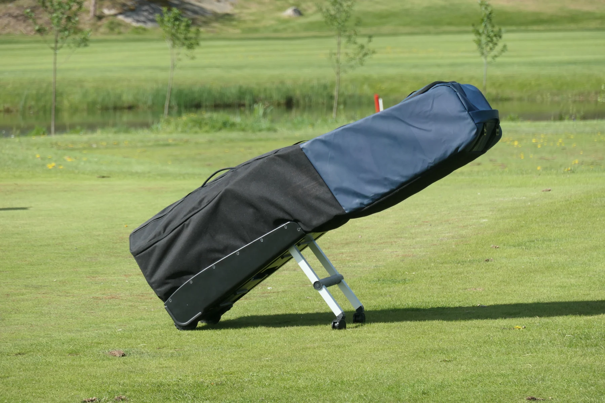
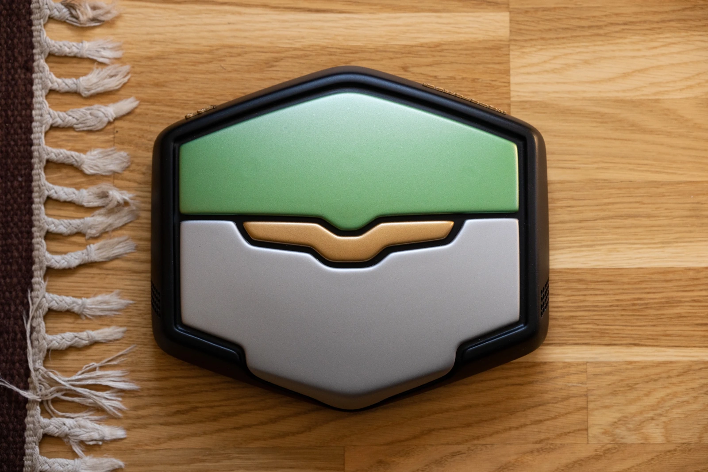
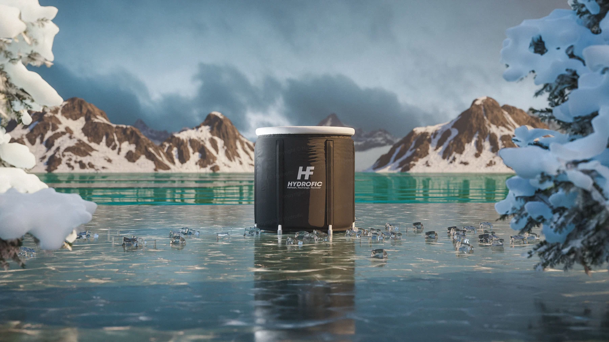
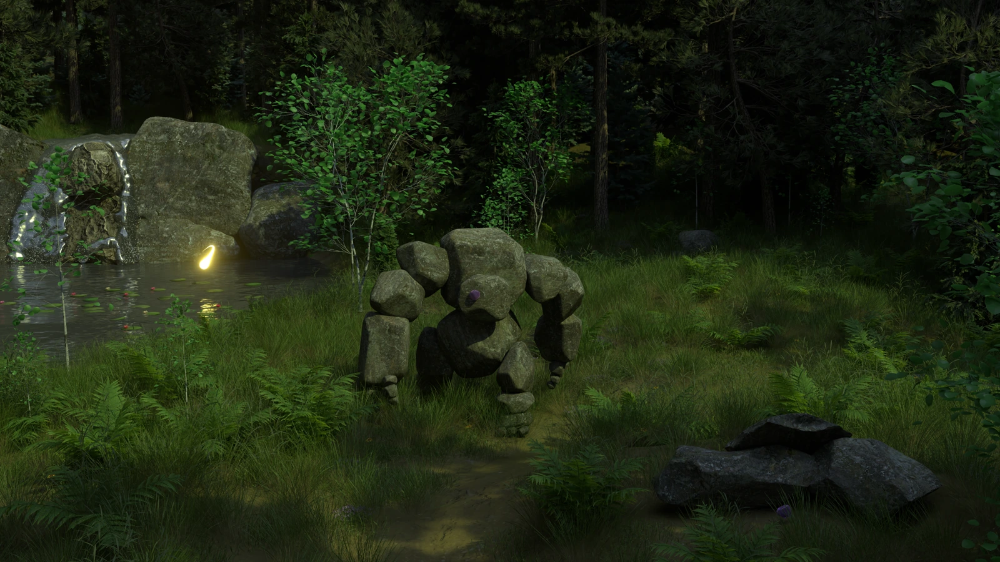
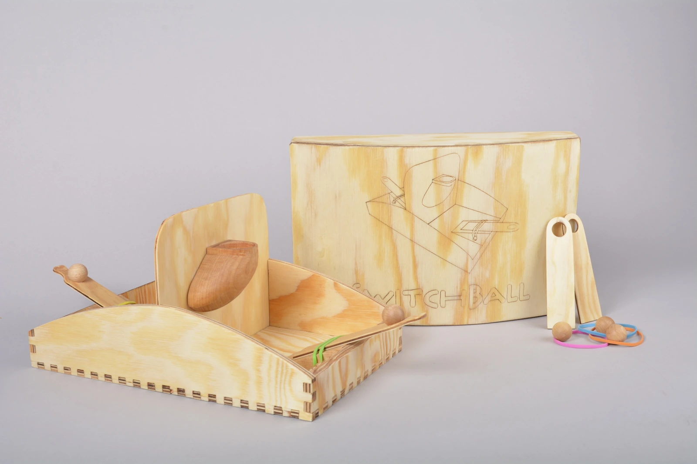
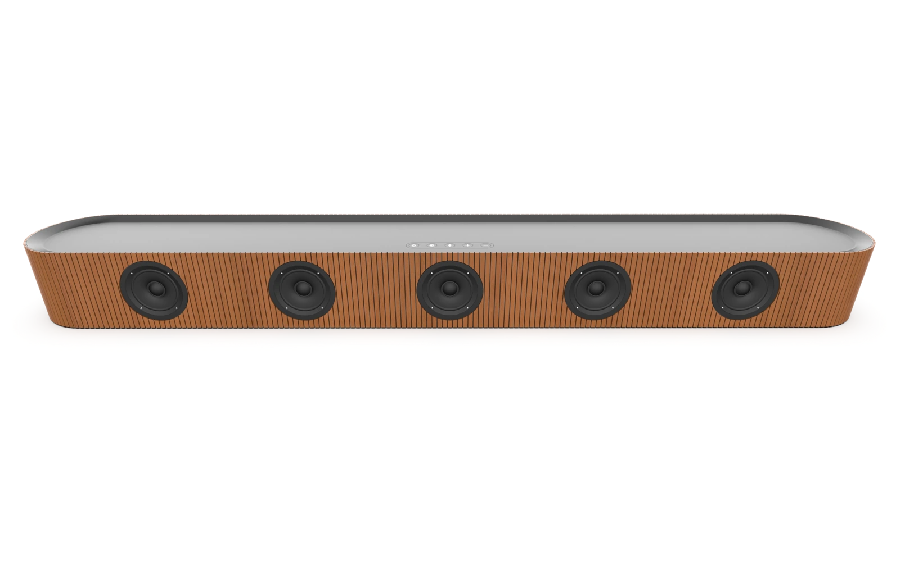
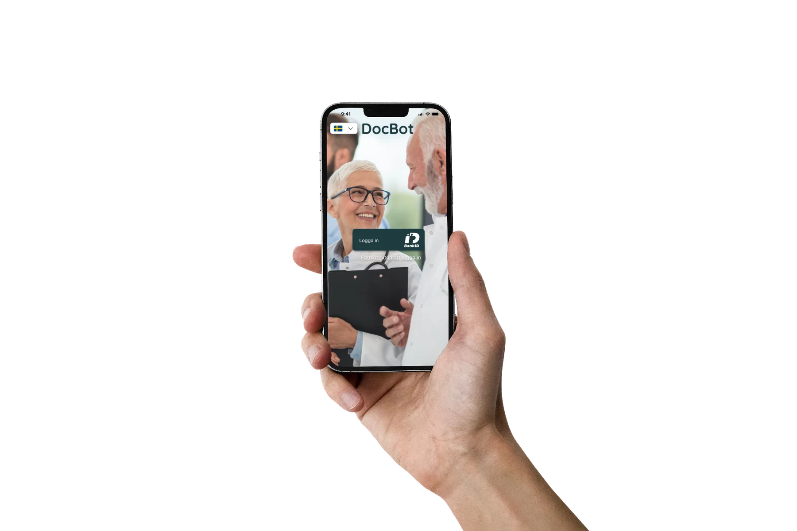
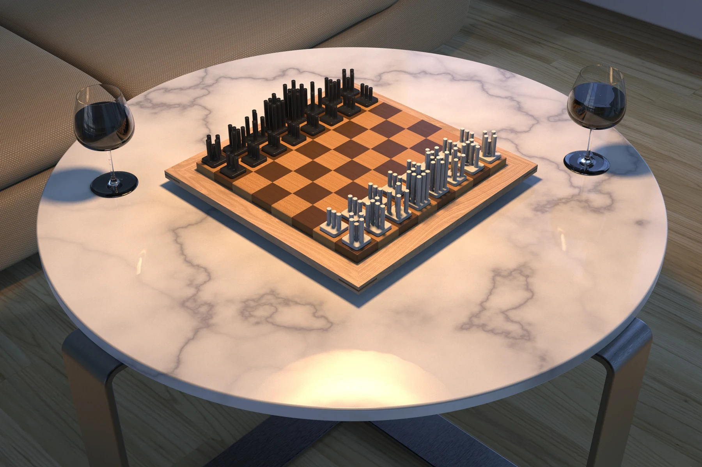

Db Wheelhouse
A wheelhouse concept developed with Db, from user research and mechanism design to a full-scale functional prototype.
Read the case studyProjects in product design, UI/UX, visualization and entrepreneurship. Explore the process, the results and what I learned along the way.

A wheelhouse concept developed with Db, from user research and mechanism design to a full-scale functional prototype.
Read the case study
Brand translation, 3D scanning, Alias development and a full-scale physical prototype.
Read the case study
A self-founded business spanning product sourcing, branding, Shopify, marketing and customers.
Read the case study
A magnetic toy concept, character and fairytale animation developed in Blender.
Read the case study
A working two-player game developed through material constraints, making and testing.
Read the case study
A Scandinavian-inspired form study developed in Autodesk Alias and visualized in KeyShot.
Read the case study
A team-designed healthcare app concept connecting services, information and conversational guidance.
Read the case study
A group form study translating chess movement into a coherent set, developed through models, prototypes and renders.
Read the case study